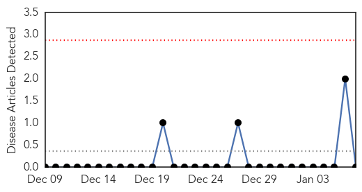

Measles
30-Day Web Trend
1 alerts, 3 warnings

30-Day Twitter Trend
0 alerts, 0 warnings

Article Locations

Article Confidences

Top Articles:
- 0.983
- Two Utah County residents bring measles home from Disney
- 0.982
- 9 Cases Linked to Theme Park
- 0.981
- 9 people contract measles after Disneyland visit
- 0.971
- California measles outbreak linked to Disneyland
- 0.969
- 9 measles cases linked to Disney theme parks
- 0.967
- 9 measles cases linked to Disney parks in California
- 0.965
- RIVERSIDE COUNTY: 2 siblings among victims of Disneyland measles outbreak
- 0.957
- Public health officials link at least 9 measles cases to Disneyland Resort
- 0.953
- Measles cases may be linked to Disney trips
- 0.952
- 9 measles cases linked to Disney theme parks in California
- 0.949
- 9 cases of measles linked to Disney theme parks in Calif.
- 0.940
- 2 More Orange County Measles Cases; 59 in State with 42 Linked to Disney Resorts: Update
- 0.932
- Rash of measles cases traced to Disneyland
- 0.921
- California health officials link measles outbreak to Disneyland
- 0.914
- Two Riverside County children diagnosed with measles
- 0.906
- Utahns Bring Measles Home From Disneyland Vacation
- 0.897
- Measles Outbreak Traced to Disneyland
- 0.887
- Measles Outbreak Tied to Disneyland : Eastern Group Publications
- 0.867
- Nine Disneyland visitors contract measles
- 0.861
- Health Alert: Nine contract measles after visit to Disney parks
- 0.855
- Test: Health officials urge Utahns to take measles assessment test to check risk
- 0.785
- Measles Cases Linked To Disney Theme Parks In California
- 0.727
- Nine US Visitors To Disney Park Get Measles, The 'Eradicated' Illness
- 0.580
- 9 measles cases linked to holiday Disneyland trips
- 0.569
- Public health officials warn of possible infection in San Diego from siblings infected with measles
Top Tweets:
-
No tweets found for Jan 07, 2015
Hemmorhagic Fever
30-Day Web Trend
0 alerts, 0 warnings

30-Day Twitter Trend
0 alerts, 0 warnings

Article Locations

Article Confidences

Top Articles:
-
No articles found for Jan 07, 2015
Top Tweets:
-
No tweets found for Jan 07, 2015